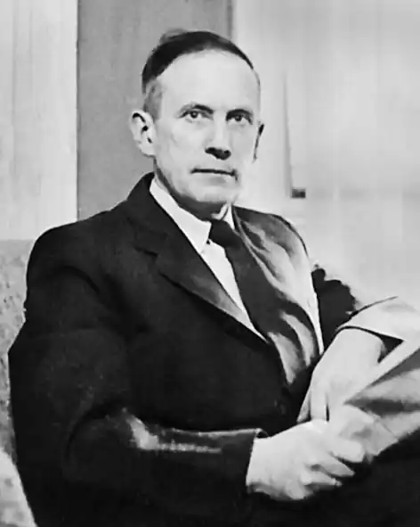

Василь Софронів-Левицький (14 грудня 1899, с. Стриганці, Стрийський район, Львівська область. Український письменник, перекладач, режисер-сценарист, журналіст, сатирик-богеміст, редактор.
Справжнє прізвище — Левицький. Псевдоніми — Василь Софронів, Софронів-Левицький.
Син Софрона і Євгенії (до шлюбу Шухевич) Левицьких. Учнем 8 класу гімназії вступив до лав січових стрільців (1917). У 1918 році склав матуру, навчався на філософському факультеті Львівського таємного університету (1921—1923). У 1924 році продовжив навчання у Карловому університеті у Празі, який закінчив у 1925 році. Друкуватися почав з 1921 року у журналах "Митуса", "Назустріч", "Літературно-науковому віснику"; з 1926 року працював у видавничому концерні Івана Тиктора, з 1932 року — головним редактором "Господарсько-кооперативного часопису" (1927—1943) та "Літопису "Червоної калини" (1929—1939) у Львові. У 1942—1943 роках був літературним керівником театру "Веселий Львів". У 1949 році емігрував з родиною до Канади, заробляв фізичною працею. Від 1950 року у Канаді; співредактор газет "Вільне слово" (1954—1960) та "Новий шлях" (1960—1972). Автор оригінальних афоризмів, які друкувалися в гумористичному журналі "Лис Микита" під псевдонімом Вадим Інший. Голова Спілки українських журналістів Канади (1967—1969). Перекладав з німецької, зокрема Густава Майрінка (роман "Ґолем") та Петера Альтенберґа. Збірку вибраних творів видано у 1972 році. Помер 1 листопада 1975 року м.Торонто, Канада.